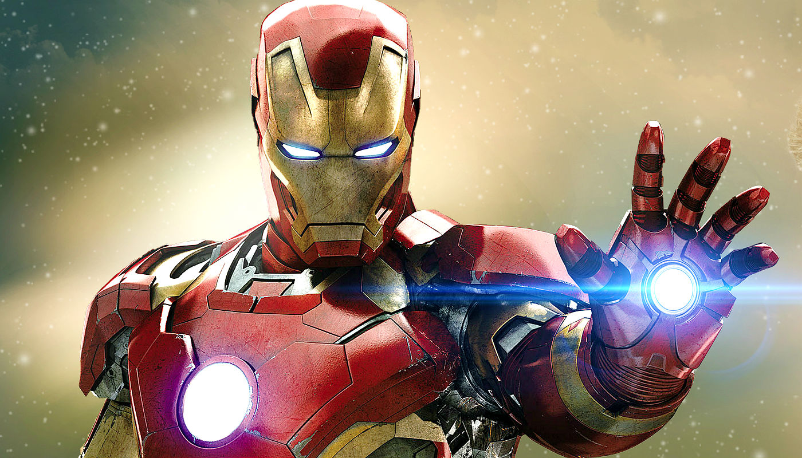

Homem de Ferro
Personagem da Marvel: Homem de Ferro

Quem é o personagem?
O Homem de Ferro, criado por Stan Lee e Jack Kirby, é Tony Stark, um bilionário e inventor que usa sua armadura tecnológica para combater o mal. Ele representa a união entre inteligência, coragem e inovação.
O Homem de Ferro, cujo nome verdadeiro é Tony Stark, é um gênio bilionário, inventor e empresário. Herdeiro de uma grande indústria de armas, ele transforma sua vida após um acidente que quase lhe tira a vida, usando sua inteligência e recursos para criar uma armadura tecnológica que lhe confere força, voo e diversos armamentos. Stark é conhecido por seu carisma, ousadia e espírito inovador, tornando-se não apenas um herói, mas também um símbolo de coragem, inteligência e responsabilidade no combate ao crime.
O Homem de Ferro não é apenas um herói, mas também um líder e membro dos Vingadores, sempre usando sua tecnologia e inteligência para proteger o mundo de ameaças perigosas. Sua história mostra que, mesmo sendo humano e vulnerável, a coragem e a inovação podem transformar alguém em um verdadeiro símbolo de esperança.
“Eu sou o Homem de Ferro.”
--Tony Stark
Curiosidades do personagem
- Tony Stark foi parcialmente inspirado no empresário e inventor Howard Hughes, conhecido por sua genialidade e estilo de vida extravagante.
- O personagem apareceu pela primeira vez na revista Tales of Suspense #39 em 1963.
- O filme Iron Man, estrelado por Robert Downey Jr., deu início ao Universo Cinematográfico da Marvel.
- Diferente de muitos heróis, o Homem de Ferro não possui superpoderes naturais; suas habilidades vêm de sua inteligência e da tecnologia que cria.
- Nos quadrinhos e filmes, Tony Stark já desenvolveu diversas armaduras diferentes, cada uma criada para situações específicas.
“Às vezes, é preciso correr antes de aprender a andar.”
--Tony Stark

Mais informações:
Você pode saber mais clicando aqui.